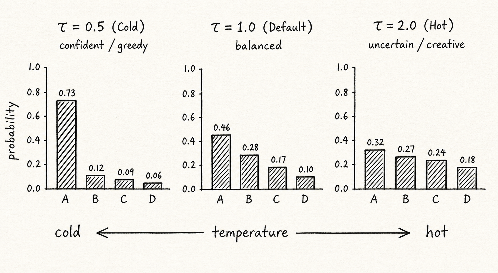

spent the morning unlearning what I thought I knew about logits. notes from chapter 4 of the deep learning book + a sketch I drew on the back of a napkin.

fig. 01 — annotated by hand
NOW //
week 23 of masters. shipping a vector db side-project. not sleeping enough.
STATS // 2026
WRITE STREAK //
RECENT // chronological